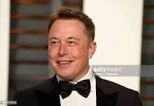

"The man who is behind SpaceX, Tesla, SolarCity, OpenAI, and TheBoring Company."

Elon Elon_Musk_Royal_Society_
Elon Musk's life Timeline
June 28, 1971: Born in South Africa
Age 12: Creates and writes a video game called Blastar; sells it for the equivalent of $500
1988 : Graduates from Pretoria Boys High School with distinctions in science and computer studies
1989 to 1991 : Attends college at Queen’s University in Kingston, Ontario. Then transfers to the University of
Pennsylvania; completed a BS in Economics (Wharton) and a BA with a major in physics
1995 : Moves to Silicon Valley; defers graduate program in applied physics and materials science at Stanford
University to join the Internet boom
February 1999 : Sells Zip2 to Compaq, the personal computer company, for $307 million, of which $22 million went
to Musk. Then forms X.com, which in 2000 morphs into PayPal
July 2002 : eBay acquires PayPal for $1.5 billion in stock, of which $165 million goes to Musk
2002 : Becomes an American citizen
2002 : Founds SpaceX
2004 : Invests in Tesla Motors
October 2008 : Becomes Tesla’s CEO
Jun 29, 2010 : Tesla IPO
May 2012 : SpaceX becomes the first commercial vehicle to deliver a load of supplies to the International Space
Station.
June 2012 : Tesla begins deliveries of the all-electric Model S
2013 : SolarCity became the second largest solar power provider
August 2013 : Releases sketch and concept of the Hyperloop
June 2014 : Committed to building a SolarCity advanced production facility in Buffalo
December 2015 : Announced creation of OpenAI, an Artificial Intelligence company
September 2016 : Revealed Mars colonization exploration architecture details
September 2018 : Warned about the dangers of AI
October 2018 : Filed an 'intent to use' trademark application for Teslaquila
November 2020 : Elon Musk has topped Microsoft founder Bill Gates to become the world's second richest person.